Chapter 2.6 - Circular Orbits (\(e = 0\))¶
Setting \(e = 0\) in the orbit equation yields:
The radius of an orbit with \(e = 0\) is thus constant, so the orbit is a circle. The velocity is also constant:
The time required to complete one orbit is known as the orbital period. Because the speed of a circular orbit is constant, the period is simply the circumference divided by the velocity:
The specific energy of a circular orbit is:
The specific energy of the circular orbit is negative. As the orbit radius goes up, the energy increases and gets closer to zero. Thus, a given launch vehicle with a certain amount of fuel can launch a large payload to an orbit with a small radius, or a small payload to an orbit with a large radius.
Low Earth Orbit¶
Many manned spacecraft and unpopulated satellites occupy ideally circular orbits around the Earth. These orbits typically fall between altitudes of 150 km (100 miles) and 2000 km (1200 miles). These orbits are called low earth orbits, or LEO. The lower of these altitudes is substantially above the bulk of the drag-inducing atmosphere. The higher altitude is less than the altitude of the Van Allen radiation belts, a dangerous region of space extending from about 1000 km outwards.

Geostationary Equatorial Orbit¶
If a satellite remains at a constant location above the Earth’s equator, then the orbit is a circle geostationary equatorial orbit, or GEO. For GEO, the radial vector from the center of the Earth to the satellite must have the same angular velocity as the Earth itself.
The angular velocity of the Earth is calculated by dividing the complete revolution, \(2\pi\) radians by the length of the sidereal day. The familiar, 24-hour, day is called the synodic day or solar day. The solar day is the time that it takes for the Sun to apparently make one revolution around the Earth.
However, for GEO, we are interested in the time it takes for the Earth to complete one rotation around its axis. This is slightly shorter than the synodic day, because the Earth is also moving around the sun as it rotates. If the Earth were fixed in space, the synodic and sidereal days would be equal length.
The sidereal day is approximately 23.93 hours, giving an inertial angular velocity of the Earth of:
The radius of GEO is
The altitude is then:
The speed at GEO is: